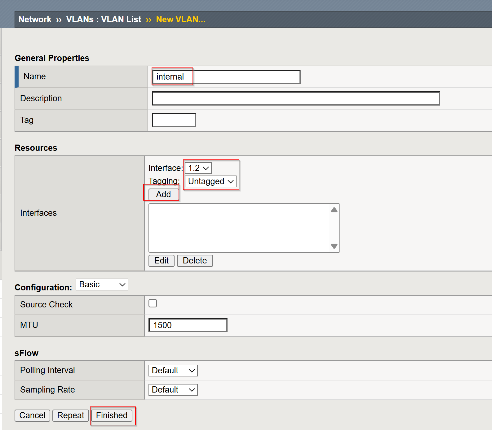
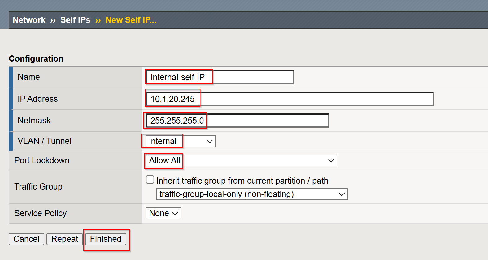
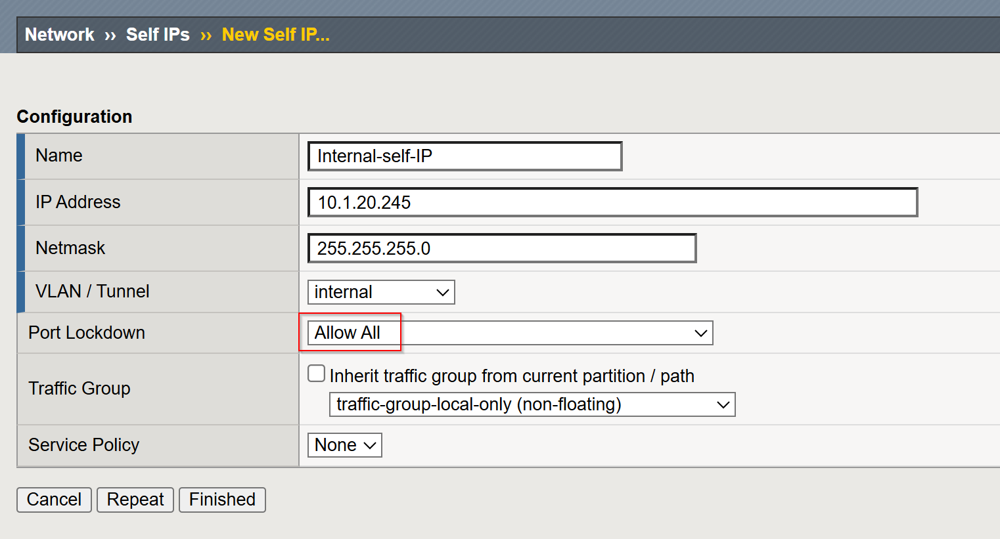
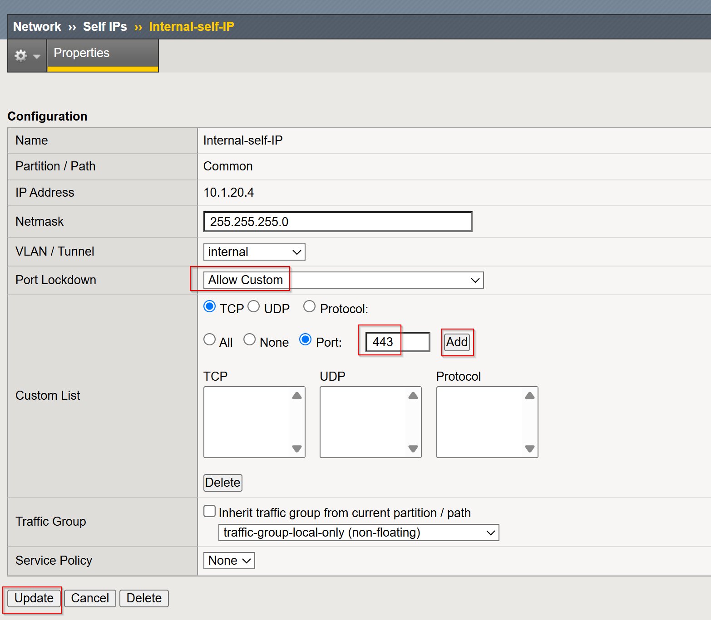
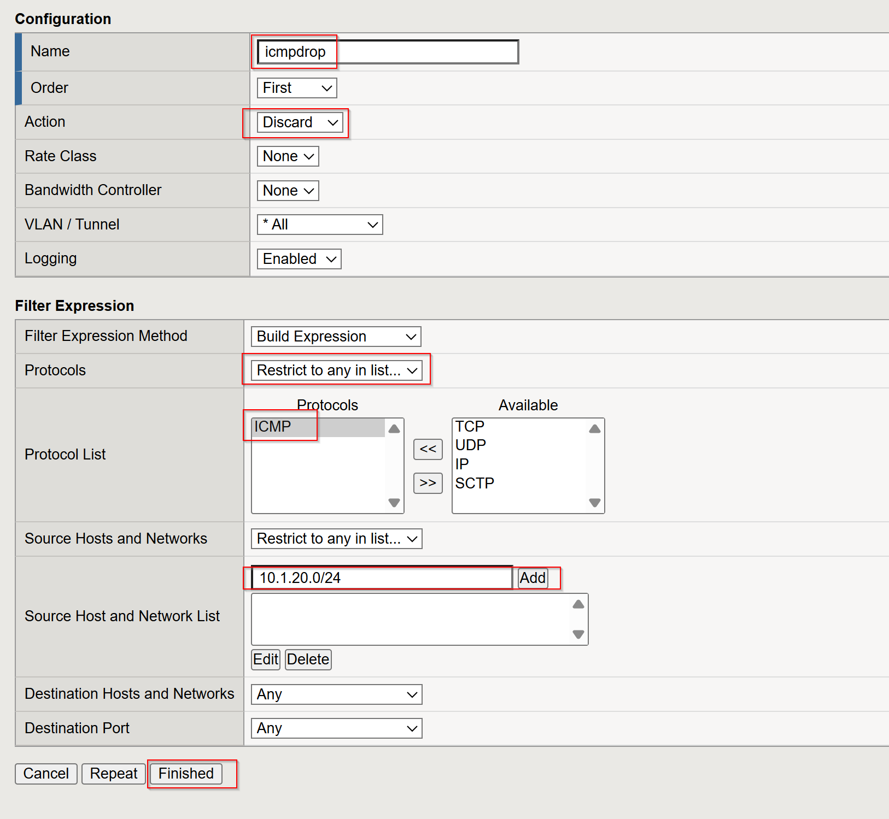
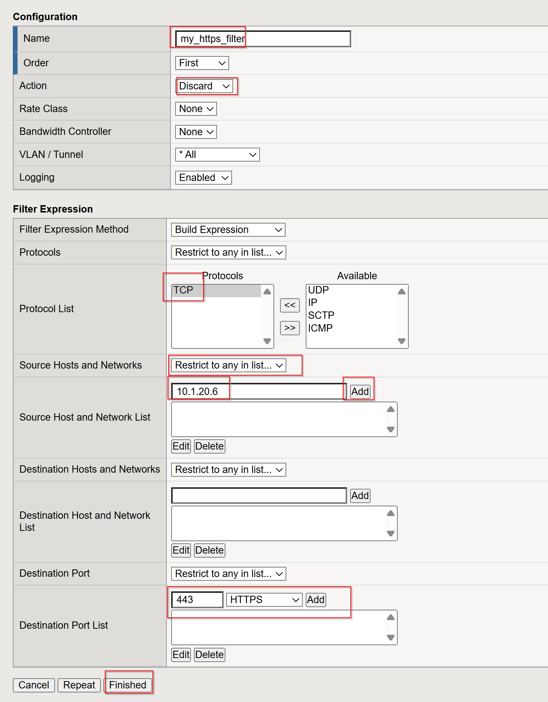
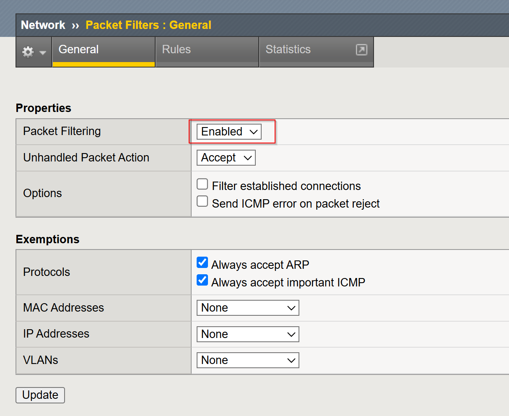

Unofficial - F5 Certification Exam Prep Material > Symposium 2026 - BIG-IP Administrator: Source | Edit on
Lab 10: Securing your BIG-IP
Objectives:
- Understand Port Lockdown settings for Self-IPs.
- Configure and test Firewall Rules for Self-IPs.
- Interpret Port Lockdown settings and their impact.
Step 1: Setup Environment
Create VLAN (Named: server_vlan): Note this step was already done in LAB1
Log in to the TMUI (BIG-IP web-based GUI)
Navigate to Network -> VLANs.
Click Create to define a new VLAN.
Provide the following details:
- Name:
server_vlan - Tag: Leave blank for an untagged VLAN
- Interfaces: Select the interface(s) to associate with the VLAN (e.g.,
1.2).
- Name:
Click Finished to create the VLAN.

TMSH Method:
tmsh create net vlan server_vlan interfaces add { 1.2 }
Create a Self IP:
- Navigate to
Network->Self IPs. - Click Create to add a new self IP. Note this step was already created in LAB1
- Provide the following details:
- Name:
server_ip - IP Address:
10.1.20.245 - Netmask/Subnet:
255.255.255.0(adjust based on your network setup) - VLAN: Select the VLAN
server_vlan - Port Lockdown: Set to
Allow All.
- Name:
- Click Finished to apply the configuration.

TMSH Method:
tmsh create /net self server_ip address 10.1.20.245/24 allow-service all vlan server_vlan- Navigate to


Step 2: Test Initial Access
Verify basic access from the Jumpbox using curl:
curl -k https://10.1.20.245
Run a port scan using nmap from the Jumpbox to identify open ports:
nmap 10.1.20.245 --max-retries 0
Step 3: List Current Port Lockdown Settings
TMUI Method:
- Log in to the BIG-IP Configuration Utility (TMUI).
- Navigate to Network -> Self IPs.
- Locate the self IP and view its Port Lockdown settings.

TMSH Method:
Run the following command in the BIG-IP shell to display current port lockdown settings:
tmsh list net self server_ip

Step 4: Customize Port Lockdown
TMUI Method:
Edit the self IP, change Port Lockdown to
Allow Custom, and manually specify ports/protocols to allow 443. Click Network > Self IPs > server_ip- Add Port 443

TMSH Method:
tmsh modify net self server_ip allow-service replace { tcp:443 } tmsh save sys config
Validate Configuration:
From the Jumpbox, test the allowed ports:
nmap -p 22,443 10.1.20.245 curl -k https://10.1.20.245 ssh admin@10.1.20.245

Step 5: Test Packet Filter Rules for Self-IPs
Add Packet Filter Rules:
Configure a packet filter rule that drops ICMP traffic and allows traffic to TCP port
443for a specific IP range (e.g.,10.1.20.0/24).TMUI
Click Network > Packet Filters > Rule
Create Drop ICMP Rule
- Name:
imcpdrop - Action:
Discard - Protocol:
ICMP - Source Hosts and Network: 10.1.20.0/24
- Name:

Create Drop HTTP Rule
- Name:
my_https_filter - Action:
Discard - Protocol:
TCP - Source Hosts and Network: 10.1.20.6
- Destination Port: 443
- Name:

TMSH Method:
Create a rule that drops ICMP packets for a subnet:
tmsh create /net packet-filter icmpdrop order 5 action discard rule "( proto ICMP ) and ( src net 10.1.20.0/24 )"
Create a rule that allows HTTPS traffic for a specific source subnet:
tmsh create /net packet-filter my_https_filter order 10 action discard rule "( ( ip proto TCP or ip6 proto TCP ) ) and ( src host 10.1.20.6 ) and ( dst port 443 )" tmsh save sys config
Verify Packet Filter Rules:
List the current packet filter rules to confirm the configuration:
tmsh list /net packet-filter
Ensure that both the icmpdrop and my_https_filter rules are properly configured with the correct order and action properties.
Enable Packet Filtering:
Enable packet filtering globally on the BIG-IP system if not already enabled:
TMUI
- Click Network > Packet Filters > General
- Set Packet Filtering:
Enable

TMSH
tmsh modify /sys db packetfilter value enableTest Packet Filter Behavior Using curl and ping:
From the Jumpbox (e.g., within 10.1.20.0/24):
Access HTTPS port
443:curl -v https://10.1.20.245
Attempt to send ICMP packets. They should be dropped:
ping 10.1.20.245
Clean Up:
If you want to disable packet filtering after testing, run the following commands:
tmsh modify /sys db packetfilter value disable tmsh delete /net packet-filter icmpdrop tmsh delete /net packet-filter my_https_filter


Closing
This guide provides clear steps to configure and secure BIG-IP self IPs using port lockdown and packet filtering. By restricting access to essential services and managing traffic at a granular level, administrators can enhance the security and control of their BIG-IP systems. These practices ensure only authorized connections are allowed while protecting against unwanted or malicious traffic.
Lab Overview: Monitoring and Mitigating DoS/DDoS Attacks on BIG-IP LTM
This lab demonstrates two key techniques for mitigating Denial-of-Service (DoS) and Distributed Denial-of-Service (DDoS) attacks on a BIG-IP LTM: SYN cookie protection and adjusting the tm.maxrejectrate. Students will simulate attacks and observe how the BIG-IP LTM responds and protects the virtual server.
Pre-Lab Section: BIG-IP LTM Configuration
In this section, students will configure the BIG-IP LTM with the necessary network settings, pool, and virtual server. Note the VLAN and Self IP steps were already done in LAB1
Tasks:
Create VLANs:
tmsh create net vlan server_vlan tag 100 interfaces add { 1.2 } tmsh create net vlan client_vlan tag 200 interfaces add { 1.1 }
This creates two VLANs: “server_vlan” (tagged with VLAN ID 100) and “client_vlan” (tagged with VLAN ID 200), assigning interfaces 1.2 and 1.1 respectively.
Create Self IPs:
tmsh create net self server_ip address 10.1.20.245/24 vlan server_vlan allow-service none tmsh create net self client_ip address 10.1.10.245/24 vlan client_vlan allow-service none
This creates self IP addresses for the “server_vlan” and “client_vlan” VLANs. The “server_ip” and “client_ip” IP do not allow any services.
Create a Pool:
tmsh create ltm pool web_pool members add { 10.1.20.14:80 }
This creates a pool named “web_pool” with a member server at 10.1.20.14 on port 80.
Create a Virtual Server:
tmsh create ltm virtual web_virtual destination 10.1.10.100:80 ip-protocol tcp pool web_poolThis creates a virtual server named “web_virtual” listening on 10.1.10.100:80 (TCP) and directs traffic to the “web_pool”.
Section 1: SYN Cookie Protection
Objective: To understand how BIG-IP LTM uses SYN cookies to protect against SYN flood attacks.
Background:
SYN flood attacks exploit the TCP handshake process by sending a high volume of SYN packets without completing the handshake. This can overwhelm the server’s resources. SYN cookie protection is a mechanism where the BIG-IP LTM uses a cryptographic cookie in the SYN-ACK packet to validate the client’s connection attempt, without storing state for every SYN.
Tasks:
Describe SYN Cookie Protection:
- Explain the TCP handshake process.
- Explain how SYN flood attacks disrupt this process.
- Describe how SYN cookies work to mitigate SYN flood attacks.
Simulate a SYN Flood Attack:
Use the
hping3tool to generate a SYN flood attack:hping3 -S -p 80 --flood 10.1.10.100 --rand-source
-S: Sets the SYN flag.-p 80: Sets the destination port to 80.--flood: Sends packets as fast as possible.--rand-source: Uses random source IP addresses.
Explain the function of each parameter in the
hping3command.
Observe BIG-IP LTM Behavior:
- Monitor the BIG-IP LTM logs (
/var/log/ltm) for SYN cookie activation messages. - Students should observe messages similar to:
01010038:4: Syncookie counter 64005 exceeded vip threshold 64000 for virtual = 10.1.10.100:8
- Explain the meaning of these log messages.
- Monitor the BIG-IP LTM logs (
Expected Results:
- Students will observe that the BIG-IP LTM activates SYN cookie protection under the simulated SYN flood attack.
- The BIG-IP LTM continues to respond to legitimate traffic while mitigating the attack.
Section 2: tm.maxrejectrate
Objective: To understand how tm.maxrejectrate helps to limit the rate at which the BIG-IP LTM sends TCP RST or ICMP unreachable packets, preventing the BIG-IP itself from being overwhelmed.
Background:
The tm.maxrejectrate setting on the BIG-IP LTM controls the maximum number of TCP RST or ICMP unreachable packets the BIG-IP sends per second. This is important to prevent the BIG-IP from being overwhelmed by the attack itself, especially in cases of DoS attacks involving non-SYN packets or spoofed traffic.
Tasks:
Describe Maximum Reject Protection:
- Explain the purpose of sending TCP RST or ICMP unreachable packets.
- Explain why limiting the rate of these responses is important.
- Introduce the
tm.maxrejectratedatabase key.
Simulate an Attack:
Use
hping3to send a flood of TCP packets with the ACK flag set:hping3 -S -p 80 --flood 10.1.10.100 -A
-A: Sets the ACK flag.
Explain how this attack differs from a SYN flood.
Observe BIG-IP LTM Behavior:
- Monitor the BIG-IP LTM logs (
/var/log/ltm) for messages related totm.maxrejectrate. - Students should observe messages similar to:
011e0001:4: Limiting open port RST response from 251 to 250 packets/sec for traffic-group /Common/traffic-group-
- Explain the meaning of these log messages and how they indicate that
tm.maxrejectrateis working.
- Monitor the BIG-IP LTM logs (
Expected Results:
- Students will observe that the BIG-IP LTM limits the rate of RST packets it sends in response to the attack.
- This prevents the BIG-IP LTM itself from becoming a victim of the attack.
Conclusion
This lab demonstrates two important mechanisms for mitigating DoS/DDoS attacks on BIG-IP LTM. SYN cookie protection protects backend servers from SYN flood attacks, while tm.maxrejectrate protects the BIG-IP LTM itself from being overwhelmed by high-volume attacks. By understanding and configuring these features, students can effectively enhance the security and availability of applications behind a BIG-IP LTM.